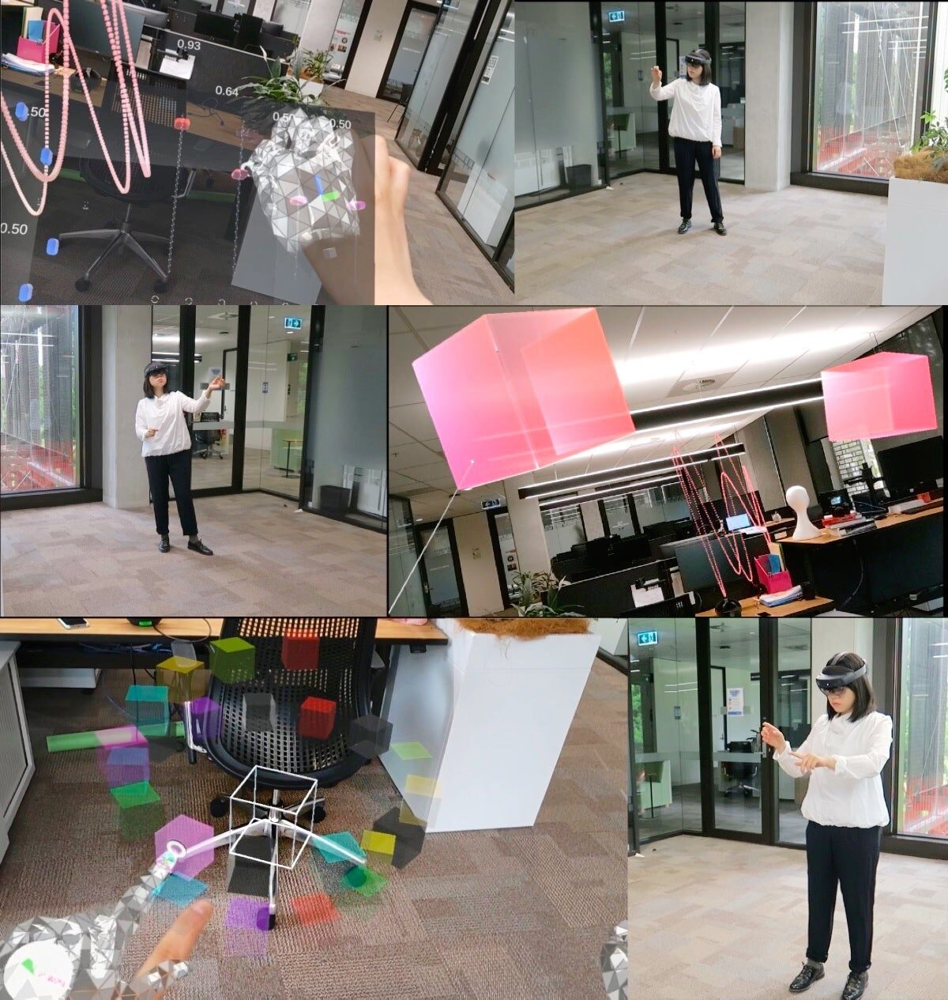
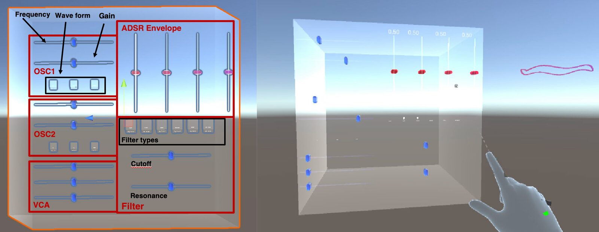
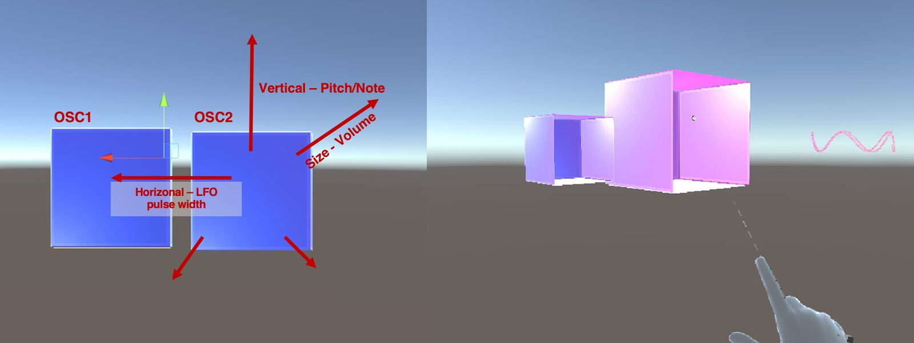
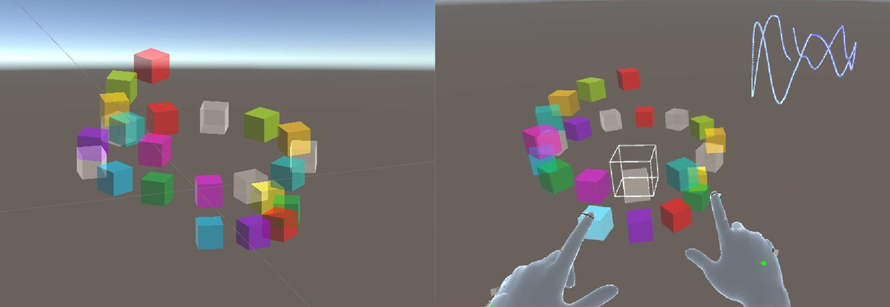
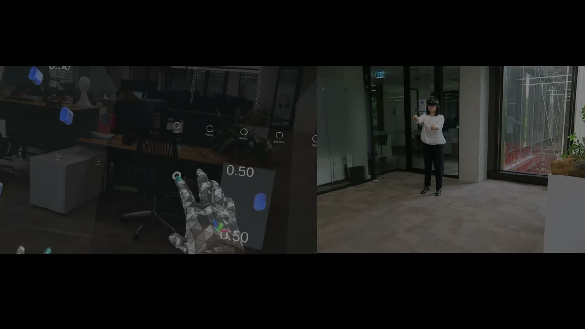

Cubing Sound: Designing a NIME for Head-mounted Augmented Reality
ABSTRACT
We present an empirical study of designing a NIME for the head-mounted augmented reality (HMAR) environment. In the NIME community, various sonic applications have incorporated augmented reality (AR) for sonic experience and audio production. With this novel digital form, new opportunities for musical expression and interface are presented. Yet few works consider whether and how the design of the NIME will be affected given the technology's affordance. In this paper, we take an autobiographical design approach to design a NIME in HMAR, exploring what is a genuine application of AR in a NIMEs and how AR mediates between the performer and sound as a creative expression. Three interface prototypes are created for a frequency modulation synthesis system. We report on their design process and our learning and experiences through self-usage and improvisation. Our designs explore free-hand and embodied interaction in our interfaces, and we reflect on how these unique qualities of HMAR contribute to an expressive medium for sonic creation.
Author Keywords
NIME, Augmented Reality, autobiographical design
CCS Concepts
•Applied computing → Sound and music computing;
•Human-centered computing~Human computer interaction (HCI)~Interaction paradigms~Mixed / augmented reality
Introduction
Augmented reality (AR) has presented great opportunities as a medium of expression for computational artists. Within the NIME community, researchers have explored augmented instruments and expressions [1][2][3], artistic installations [4][5], and sonic applications that enrich people's everyday experiences through mobile devices [6].


Improvisations with three musical interface prototypes in design orders (Top to bottom).
More recent works incorporate advanced AR devices such as head-mounted displays (HMDs), which provide a natural and immersive sonic experience through free-hand interactions and enclosed large field-of-views. In [7], a head-mounted augmented reality (HMAR) compositional platform is created which allows the user to use eye-gaze and body movements for electronic music production. [4] and [8] consider free-hand gesturing to manipulate sound components for an augmented sonic experience of real-world sculptural elements. With the emphasis on interaction and visual complements, the sonic experience in the AR environment becomes multimodal, enhancing both “being and doing” of sonic elements in music performance [9].
More importantly, the continuum of AR interfaces from mobile devices such as smartphones or tablets to HMDs also affects how the performer makes music. In [10], Berthaut presented various forms of 3D interaction for musical expression as the source of inspiration for sonic interaction design in an AR environment. Furthermore, Chevalier and Kiefer [11] addressed user perception and multimodality of creative AR expressions, questioning how a performer would express themselves and whether their practices will be affected given the new performing environment that AR supports.
With this background, our work is driven by two questions: 1) What factors constitute a genuine interface for music expression that suits a HMAR environment? 2) How do these factors affect the performer's experience during music making? In this paper, we take an autobiographical design approach, taking the role of both the designer and the user (performer). We describe three interface candidates to control a frequency modulation synthesis system in a HMAR environment. We represent our sonic interfaces with basic cubes, a primitive of computer graphics taken on as a visual motif for our designs. Through the experience of iterative design, intensive self-usage and formal improvisations, we reflect on HMAR as a medium for creative musical expression and discuss how our findings can contribute to future HMAR musical design.
This paper seeks to differentiate NIME design in AR, specifically HMAR, from the previously explored domain of VR musical instruments. Although related, these media have different affordances and design challenges. Our research contributes practical examples and insights into what might represent a “genuine” HMAR musical interface.
Related Work
NIMEs in Mixed Reality
To date, a number of NIMEs have incorporated Mixed Reality technology, including augmented reality (AR) and virtual reality (VR), for novel music performance or experience.
For AR, most sonic systems are designed as a combination of software (that presents sonic results) and physical features (as a source of input control or data) for “sonic augmentation”. For example, both AuSynthAR [12] and YARMI [3], are novel musical interfaces that use mobile devices for the generation of sound, and have their live camera feeds as the input source of control where physical musical tokens are manipulated by the user for sound synthesises. Other applications such as Ripples [6] used audio to represent the information of the environment of a botanical garden based on the user's real-time location for an augmented digital visiting experience.
Regarding interaction, these systems are either designed to be physically tangible through our hands or body movements, or virtually through visual or audio cues to control sound parameters. Few works account for a system that supports direct manipulations of these sonic elements in the HMAR environment, where the user is fully enveloped in an augmented space on top of reality. That said, the performer can freely express themselves using hand gestures in the augmented sonic space, and still have access to reality for co-experiences and co-creations.
In contrast, NIMEs in VR, more commonly known as virtual musical instruments (VMIs) [9] or virtual reality musical instruments (VRMIs) [13], seek for new musical experiences that cannot be obtained in the real world. For example, Palumbo et al. [14] created a modular synthesis system using hand-held controllers and headsets in VR. By patching sound modules over the virtual space, performers are freed from desktop computer music software and hardware synthesisers with a more flexible and collaborative music-making experience in the shared immersive space. Çamcı [15] considered a hyperreal instrument system that keeps the sense of sound control within physical objects, while having the audiovisual experience/feedback fully virtual.
Although work on NIMEs in AR and VR shares the similar goal of exploring new musical expressions and experiences, from the above examples we can see that each NIME's design was shaped by their unique technical qualities and devices' affordances. AR NIMEs consider an augmented musical experience connecting to the real world, whereas VMIs and VRMIs are for a total computationally generated experience immersed in their own [11]. This difference should be reflected in the design of AR NIMEs. In our work, we are concerned with the design of NIMEs in HMAR, questioning what makes up a genuine interface for musical expression given its advantages of free-hand interactions and being able to communicate with reality.
Design through First-person Research in HCI: Autobiographical Design
First-person research in HCI, including autoethnography, autobiographical design and autoethnographical research through design, are a series of research methods rooted in sociology and anthropology [16][17]. Different from traditional user-centered research methods in HCI, it suggests using researchers' own experiences and insights as to the epistemological input for the contribution of the knowledge. These approaches are particularly helpful in tackling research questions beyond the pure technical implementation of a computing system. Furthermore, as addressed in [18], it is indisputable that HCI researchers have involved themselves in many phases of a system's development, indicating the importance and necessity of first-person insights to design a HCI system.
Whereas autoethnography and autoethnographical research through design are often concerned with collective and cultural aspects of a computing system, autobiographical design focuses on exploring genuine usage of a computing system based on the researcher/designer's needs and experiences during the creating process [19]. This method aligns with NIME research where researchers/performers often play multiple roles in designing a computer music system. For example in designing the Vocal Chorder [20], the first author applied their needs and visions as an opera singer as input throughout the design process. This process also makes sense in HMAR, an individual interface where much is still to be learned about musical interaction with their new interface paradigms (e.g., hand tracking as the primary input mechanism). The increased risks of a global pandemic also suggest a focus on autobiographical research processes.
Sound Cubing: An Autobiographical NIME Design
In our work, we aimed to design a suitable interface for a frequency modulation synthesis system in an HMAR environment. This musical interface provides a natural sound synthesis experience through the affordance and user experience of HMDs. More importantly, it can be expressive for the performer to experiment with different sonic ideas. We took the autobiographical design approach, in which the researcher (first author) was also the designer and the user (performer) of the system. The researcher has training in computer music and two years of experience in sonic interface design in HMAR.
Frequency Modulation Synthesis
We selected a simple frequency modulation synthesis system as the sound engine for our user interface. The sound synthesis mechanism in our system comprises: two oscillators and their properties, a mixer for these two oscillators, an ADSR (attack-decay-sustain-release) envelope, LFO (low-frequency oscillator) and filter(s).
Design Process
Following the autobiographical design process [19], we created three interfaces prototypes shaped through the learning and experiences of intensive self-usage along the way. The three interfaces featured simple visual designs, almost exclusively using 3D cubes which forms a visual motif for our work. The first interface recreates a physical synthesiser interface, the second applies embodied interaction to multiple cubes that move within space, and the third uses smaller scale cubes and individual finger interactions. In addition to these interfaces, a real-time audio visualiser was included as part of the AR environment. We describe details of each interface and insights from their design process as follows.
Sound Cubing as a Physical Interface
We started with a design idea inspired by a physical synthesiser interface, a virtual panel containing sliders and buttons mapped to synthesis parameters. The interface consisted of a 3D cube with virtual buttons and faders on one side that can be operated with hand gestures. As shown in Image 2, the left side of the interface presents basic tuning options of two oscillators (e.g., frequencies) and the right side provides an ADSR envelope (top) and a filter for further frequency modulation synthesis tuning. The whole cube can be freely moved over the space so that the performer can perform anywhere that suits them best.


The interface that contains sliders and buttons for an FM synthesis (left). Attempting to adjust sliders on the interface in Unity, with the audio visualisation (right).
In designing this interface, we wondered how interaction with a traditional synthesiser interface would differ in the HMAR environment. Soon we found using free-hand gestures to control the synthesis panel requires accurate manipulation that costs an amount of time due to the nature of hologram instability in the HMAR environment [21]. This largely affects the process of sound tuning in real-time.
Sound Cubing through Embodied Interaction
Our second prototype represents an “ambiguous” user interface that transforms sliders and buttons’ direct control into a simpler interaction. This interface is composed of two cubes with each representing an oscillator, they are connected such that moving one modulates the other (Image 3). This design considers embodied interaction where the manipulation of sound cubes happens around the performer's body, rather than a single plane at the front [22]. All parameter controls are embodied interactions prompted by moving two sound cubes around the user’s body in space through far pointer1 hand interactions. This interaction design allows the user to freely walk around and continue adjusting the synthesis process, instead of being limited at a specific spot or a surface.


The embodied interface with two cubes (left). Changing pitch through moving a cube vertically in Unity (right).
The performer can manipulate the cubes horizontally/vertically, and increase/shrink their sizes to make corresponding sonic changes. Controls for the filter is hidden from the interface with pre-defined settings. With this interface, ease-of-use had been increased by aggregating several sound parameters into one control, but this came at a cost of diversity and richness as a musical instrument.
Sound Cubing through Flexible Finger Composition
Our final design was an interface composed of individual sound cubes with each representing a single musical note. These cubes could be activated by intersecting them with one finger like a kind of cylindrical MIDI keyboard (Image 4). The cylinder is sized so that a performer can reach most of the cubes from any one standing position. It is possible for multiple notes to be played simultaneously, taking advantage of the full-hand tracking available in the HMAR headset.


Music notes including tones and semitones arranged in a cylinder surface (left). Playing chords in Unity (right).
Similar to the second prototype, the synthesis parameters are pre-defined. The design of the cylindrical surface offers ease of interaction, allowing the user to use fingers to play chords and providing more musical composition options. The performer can turn the interface around by grabbing its center with more flexibility in playing different notes. Each musical note is attached with different colours (tones) or rim lights (semi-tones) to distinguish each other.
Technical Implementation
The Microsoft HoloLens 2 (HL2) [23] was used as the HMAR device to develop the three interfaces. HL2 offers hand tracking and enables sophisticated free-hand interactions, including NearinteractionTouchable, NearinteractionGrabbable, far pointer interactions, etc. [24]. This affordance provides a wide range options that can support different interaction design ideas during the iterative design of these interfaces.
The user interfaces were programmed in Unity version 2019.4.31f1 with Microsoft’s Mixed Reality Toolkit (MRTK) [25]. The interface comprises interactable 3D objects scripted by MRTK as game objects in Unity. Sound generation was implemented using Disunity library [26], which provides a sound synthesis primitives such as oscillators, envelopes, mixer, etc. These components were assembled by feeding into each other's input in sequence and output to an audio sink in game objects.
Cubing Sound: Evaluating through Self-Use and Improvisation
We have self-evaluated three interface prototypes we designed over a number of sessions during and after their developments. We conducted a systematic sequence of 3-minute improvised performances by the first author, which were recorded in video format and stored for future use. A short reflection was written directly after each performance. We summarise these findings along with our learning during the design process.

▶Improvisation Demo (https://youtu.be/H6W1AIHlQIg)
Firstly, all three prototypes presented an enjoyable and interesting sound synthesising experience during the 3 minute improvisation with different positive aspects. In the reflection, we wrote:
Prototype 1 (P1) - “...I also found sliding the cutoff slider of the filter is a way of changing sound/making the sound interesting, which is quite fun.”
P2 - “ … But I still found it interesting in the process of moving the cubes over the space to see what sonic changes can be made. I also remembered ... I found it interesting and feel it was the highlight of the performance.”
P3 - “ ... slowly moving out from the cubes, to create a chords/composition fading effect. I feel that was exciting in a sense, ... is all involved in the making of music, really like a performance not for myself but also for audiences.”
The satisfaction with our systems showed our design really works when used for music improvisations, reflecting on the corresponding principle in autobiographical design [27]. Furthermore, we found that improvising experiences with P2 and P3 made us feel “performative”. We could deeply engage with the interface for creating interesting sound using flexible gestures, rather than simply tuning sound parameters. These reflections also affirmed our design decision from a pure virtual control panel to a flexible and diverse interface.
Secondly, the dynamic audio visualisation designed as visual assistance helps the improvisation in the first two prototypes. We noted that the performer could freely arrange the visualisation over the space and it increased the presence of making music through visual feedback in this HMAR environment, given that the interface is either purely functional or abstract. As for P3, the visualisation was neither mentioned in our reflection nor was used when we rechecked the improvisation video. The reason might be that the P3 provides more sophisticated sound synthesis options and has visual responses designed inside the interface itself. In the improvisation, we reported that the P3 looks fancy and interesting to play with, although we have been familiar with it during its development. The subtleness of interacting with small sound cubes enriched the improvising process:
P3 - “This subtle feedback really contribute to “expressiveness” in a sense, making me feel I'm not just pressing cubes to trigger sound, but there is some process in it and I'm really communicating with it...”
What's more, some issues were revealed related to the interaction affordance of our interfaces during the improvisation. We noted that improvising using P1 made arms sore as we were constantly adjusting different sliders and pressing buttons. For P2, a similar issue was found in which we kept moving the cubes over the space through far pointer interactions. Though the irritated feeling was decreased and we found the process interesting as we can explore sonic variations given the embodied interaction design. The only issue found in the P3 was the inaccuracy of finger tracking due to the AR headset which some sound cubes were not properly triggered.
Reflecting on the design of three interfaces prototypes, the improvisations further validated the previous insights. We first found that accurate controls of sound parameters similar to physical sound synthesisers are not applicable in the HMAR environment. The reported tiredness and frustration were caused by repeated hand gestures on a virtual plane. While having embodied interaction and flexible fingers' interactions in later prototypes, the performer could be more freely interacting with them and exploring sound synthesising opportunities in the augmented sonic space. These findings suggest the design of an interface should avoid fine or subtle tuning and adapt to the HMAR environment given its 3D interaction affordance. More importantly, the transition from P1 to P3 presented the shift of interface design from “sound control” to “sound expression”, which was addressed by Dobrian and Koppelman regarding expressiveness in a NIME design [28]. The reflections show an increasing feeling of expression using novel interactions with these sound cubes and the discovery of interesting sonic results in the HMAR environment.
Conclusion
The goal of our work was to explore the design of a NIME that suits a HMAR environment. We were interested in how this digital environment affords computer musicians in performing music through musical interfaces. We took the autobiographical design approach which we used our first-person experiences in sonic interaction design to envision a genuine HMAR musical interface. Three interface prototypes were iteratively created with insights and learning revealed along the design process. Through intensive self-usage and formal improvisations, we found that the free-hand interaction and embodied interaction supported by the HL2 allowed us to flexibly interact with sound objects and be most expressive in triggering particular sonic results. Furthermore, additional audio visualisations and visual complements contributed to the multimodality of the AR experience and helped the sound synthesising process. These findings lead us to reflect on how flexible free-hand interactions and embodied interactions are used in the HMAR environment and how that could contribute a unique computationally mediated musical experience and further musical interface designs.
With these insights, our future work will commence with user evaluations with musicians, which were affected by the global pandemic. We will also focus on improving current prototypes and use these systems for live music improvisations and performances.
Acknowledgements
The authors wish to thank Matt Adcock for technical support in this project.
Ethics Statement
The empirical evaluation in this work took the autobiographical design approach which does not involve any human participants other than the author themselves. This also implies there are no concerns on accessibility, inclusion and sustainabilities at the current stage of the work.
The Microsoft HoloLens 2 device used in this work is provided by CSIRO. There are no potential conflicts of interest involved in this work.
Appendix
Improvisation Reflections of Three Interfaces
First design:
The direct feeling after finishing improvisation using this interface is my right arm is sour, maybe because I need to use my hand to adjust sliders all the time to make sound changes... I started with increasing the frequency of two oscs which i found the sound was interesting at the start, when the frequency is gradually going up. However, given the nature of this synthesis has a lfo keep sending the pulse width, I feel the temple is a bit boring and annoying, and I started to think whether I can get rid of them through adjusting sound parameters. I found adjusting the attack and sustain of the envelope can give a fat sound, which I feel it decreased the annoying feeling of the pulse temple. I also found sliding the cutoff slider of the filter is a way of changing sound/making the sound interesting, which is quite fun. I think the overall experience is I'm driven by the sound that is keep playing, so that I had to make some changes and it hurry the process of making music and feel a bit tired. Although I like the design of a bit transparent surface which I can tune parameters and still see the visualisation at the same time.
Second design:
The two cubes presented in front of me was already playing some sound, in a pulse tempo, so I started with thinking about how to make some changes of them to make it sound more rich. Because these cubes are abstract and did not provide very much information about how that map to sound parameters, I moved the visualisation into my eye-field as the assistance. I also feel having the live visuals add more dynamics to my experience of music making. Without it I feel it's dead in a sense that I just control two virtual cubes in the space. Most of interfaces are through far reached interaction by moving them over the space to cause sound change. I firstly moving one cube horizontally to change the temple of that pulse and adjust it so that I feel it sounds good. Then I started with another cube as I know it can modulation another one sonically. As the control is abstract, I feel I spent some time of just moving around the cubes to explore sonic options... But I still found interesting in the process of moving the cubes over the space to see what sonic changes can be made. I also remembered that at nearly the end I move one cube quickly up and down - which is changing the pitch, it did provide some interesting sound that I found interesting and feel it was the highlight of the performance. I do feel having the visualisation is necessary here as it indeed clear out the ambiguity of this interface.
Third design:
I still feel the interface looks fancy and interesting (although I've spent lots of time with it during the development), that having different sound cubes for me to experiment different sound.
I first grab the whole instrument to a comfortable position so that i can start improvising. I started with the c5 note, as I just get the conciousness this is where a key board starts/the first note I would try when giving me a keyboard. Then I started playing several chords at lower octave, as I know it will generate a nice sound due to my development. With lots of low tone sound like the start/opening of a performance, I feel that now I need a sharper tone to make the sound more variato, or have a positive tone. After that I started to do some improvisation by intuition and or even just pressing the note randomly, and see how I can move forward to make a good composition. Though during this process, I did find some lack of hand tracking due to the HL2, so that the interaction did not trigger the specific sound cube that I want exactly ... this is kind of annoying... But I feel I have to adapt this errors and they are fine to me as I can still play something next so that can make sense of it. I also remembered that about to the end of 3 mins performance, I just start to mess around and swipe all these cubes as the end of this improvisation. I also clearly remembered that I had some gestures using my fingers - slowly moving out from the cubes, to create a chords/composition fading effect. I feel that was exciting in a sense, that my gesture and my whole body is all involved in the making of music really like a performance not for myself but also for audiences. This subtle feedback really contribute to "expressiveness" in a sense, making me feel I'm not just pressing cubes to trigger sound, but there is some process in it and I'm really communicating with it ...
Footnotes
Far pointers allow a user to interact with an object that appears beyond their physical reach. A fine line cast from their hand indicates a selected object.
↩
Citations
- ↩Santini, G. (2020). Augmented Piano in Augmented Reality. In R. Michon & F. Schroeder (Eds.), Proceedings of the International Conference on New Interfaces for Musical Expression (pp. 411–415). Birmingham City University. https://doi.org/10.5281/zenodo.4813449
- ↩Lucas, P. P. (2019). AuSynthAR: A simple low-cost modular synthesizer based on Augmented Reality. In M. Queiroz & A. X. Sedó (Eds.), Proceedings of the International Conference on New Interfaces for Musical Expression (pp. 405–406). UFRGS. https://doi.org/10.5281/zenodo.3673011
- ↩Laurenzo, T., Rodrı́guez, E., & Castro, J. F. (2009). YARMI : an Augmented Reality Musical Instrument. Proceedings of the International Conference on New Interfaces for Musical Expression, 268–269. https://doi.org/10.5281/zenodo.1177611
- ↩Martin, C. P., Liu, Z., Wang, Y., He, W., & Gardner, H. (2020). Sonic Sculpture: Activating Engagement with Head-Mounted Augmented Reality. In R. Michon & F. Schroeder (Eds.), Proceedings of the International Conference on New Interfaces for Musical Expression (pp. 39–42). Birmingham City University. https://doi.org/10.5281/zenodo.4813445
- ↩Kiefer, C., & Chevalier, C. (2018). Towards New Modes of Collective Musical Expression through Audio Augmented Reality. In T. M. Luke Dahl Douglas Bowman (Ed.), Proceedings of the International Conference on New Interfaces for Musical Expression (pp. 25–28). Virginia Tech. https://doi.org/10.5281/zenodo.1302661
- ↩Wu, Y., & Freeman, J. (2021, June). Ripples: An Auditory Augmented Reality iOS Application for the Atlanta Botanical Garden. Proceedings of the International Conference on New Interfaces for Musical Expression. https://doi.org/10.21428/92fbeb44.b8e82252
- ↩Bauer, V., & Bouchara, T. (2021). First Steps Towards Augmented Reality Interactive Electronic Music Production. 2021 IEEE Conference on Virtual Reality and 3D User Interfaces Abstracts and Workshops (VRW), 90–93.
- ↩Martin, C. P., Liu, Z., Wang, Y., He, W., & Gardner, H. (2020). Sonic Sculpture: Activating Engagement with Head-Mounted Augmented Reality. In R. Michon & F. Schroeder (Eds.), Proceedings of the International Conference on New Interfaces for Musical Expression (pp. 39–42). Birmingham City University. https://doi.org/10.5281/zenodo.4813445
- ↩Wang, Y., Gardner, H., Adcock, M., & Martin, C. (2021). Sonic Sculptural Staircase in Head-Mounted Augmented Reality. International Conference on New Interfaces for Musical Expression.
- ↩Atherton, J., & Wang, G. (2020). Doing vs. Being: A philosophy of design for artful VR. Journal of New Music Research, 49(1), 35–59.
- ↩Berthaut, F. (2020). 3D interaction techniques for musical expression. Journal of New Music Research, 49(1), 60–72.
- ↩Chevalier, C., & Kiefer, C. (2020). What does augmented reality mean as a medium of expression for computational artists? Leonardo, 53(3), 263–267.
- ↩Lucas, P. P. (2019). AuSynthAR: A simple low-cost modular synthesizer based on Augmented Reality. In M. Queiroz & A. X. Sedó (Eds.), Proceedings of the International Conference on New Interfaces for Musical Expression (pp. 405–406). UFRGS. https://doi.org/10.5281/zenodo.3673011
- ↩Laurenzo, T., Rodrı́guez, E., & Castro, J. F. (2009). YARMI : an Augmented Reality Musical Instrument. Proceedings of the International Conference on New Interfaces for Musical Expression, 268–269. https://doi.org/10.5281/zenodo.1177611
- ↩Wu, Y., & Freeman, J. (2021, June). Ripples: An Auditory Augmented Reality iOS Application for the Atlanta Botanical Garden. Proceedings of the International Conference on New Interfaces for Musical Expression. https://doi.org/10.21428/92fbeb44.b8e82252
- ↩Atherton, J., & Wang, G. (2020). Doing vs. Being: A philosophy of design for artful VR. Journal of New Music Research, 49(1), 35–59.
- ↩Serafin, S., Erkut, C., Kojs, J., Nilsson, N. C., & Nordahl, R. (2016). Virtual reality musical instruments: State of the art, design principles, and future directions. Computer Music Journal, 40(3), 22–40.
- ↩Palumbo, M., Zonta, A., & Wakefield, G. (2020). Modular reality: Analogues of patching in immersive space. Journal of New Music Research, 49(1), 8–23.
- ↩Çamcı, A., & Granzow, J. (2019). Hyperreal Instruments: Bridging VR and Digital Fabrication to Facilitate New Forms of Musical Expression. Leonardo Music Journal, 29, 14–18.
- ↩Chevalier, C., & Kiefer, C. (2020). What does augmented reality mean as a medium of expression for computational artists? Leonardo, 53(3), 263–267.
- ↩Lucero, A., Desjardins, A., Neustaedter, C., Höök, K., Hassenzahl, M., & Cecchinato, M. E. (2019). A sample of one: First-person research methods in HCI. Companion Publication of the 2019 on Designing Interactive Systems Conference 2019 Companion, 385–388.
- ↩Desjardins, A., & Ball, A. (2018). Revealing tensions in autobiographical design in HCI. Proceedings of the 2018 Designing Interactive Systems Conference, 753–764.
- ↩Desjardins, A., Tomico, O., Lucero, A., Cecchinato, M. E., & Neustaedter, C. (2021). Introduction to the Special Issue on First-Person Methods in HCI. In ACM Transactions on Computer-Human Interaction (TOCHI) (Vol. 28, pp. 1–12). ACM New York, NY.
- ↩Neustaedter, C., & Sengers, P. (2012). Autobiographical design in HCI research: designing and learning through use-it-yourself. Proceedings of the Designing Interactive Systems Conference, 514–523.
- ↩Unander-Scharin, C., Unander-Scharin, \AAsa, & Höök, K. (2014). The vocal chorder: Empowering opera singers with a large interactive instrument. Proceedings of the SIGCHI Conference on Human Factors in Computing Systems, 1001–1010.
- ↩Neustaedter, C., & Sengers, P. (2012). Autobiographical design in HCI research: designing and learning through use-it-yourself. Proceedings of the Designing Interactive Systems Conference, 514–523.
- ↩Microsoft Mixed Reality MRTK Hologram stability. (n.d.). https://docs.microsoft.com/en-us/windows/mixed-reality/develop/advanced-concepts/hologram-stability. https://docs.microsoft.com/en-us/windows/mixed-reality/develop/advanced-concepts/hologram-stability
- ↩Wakefield, G., Palumbo, M., & Zonta, A. (2020). Affordances and Constraints of Modular Synthesis in Virtual Reality. Proceedings of the International Conference on New Interfaces for Musical Expression, 547–550.
- ↩Microsoft. (2020). HoloLens 2 Overview (2st gen). Microsoft. https://docs.microsoft.com/en-us/hololens/hololens2-options?tabs=device
- ↩
- ↩Microsoft. (2020). microsoft/MixedRealityToolkit-Unity. GitHub. https://github.com/microsoft/MixedRealityToolkit-Unity
- ↩Sorensen, A. (2020). The Disunity Synthesizer Toolkit. GitHub. https://github.com/digego/DisunityST
- ↩Neustaedter, C., & Sengers, P. (2012). Autobiographical design: what you can learn from designing for yourself. Interactions, 19(6), 28–33.
- ↩Dobrian, C., & Koppelman, D. (2006). The E in NIME: Musical Expression with New Computer Interfaces. Proceedings of the International Conference on New Interfaces for Musical Expression, 277–282. https://doi.org/10.5281/zenodo.1176893